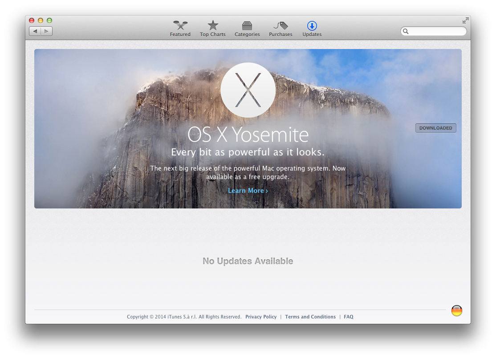
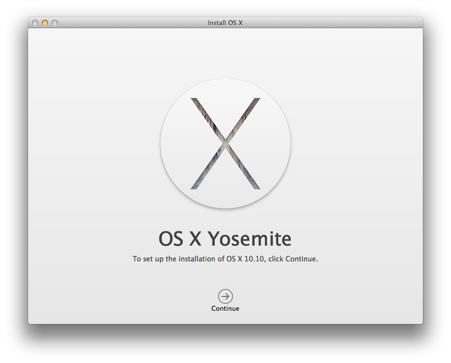

Unboxing OS X Yosemite for Packer
Today OS X Yosemite is available in the Mac App Store. So it's time to build a basebox for Packer and Vagrant.
First I have to download the new image.
vagrant up a Mavericks box
To do that, I start a Mavericks box, that I already have. I use this Vagrantfile with the box named osx109.
# -*- mode: ruby -*-
# vi: set ft=ruby :
VAGRANTFILE_API_VERSION = "2"
Vagrant.configure(VAGRANTFILE_API_VERSION) do |config|
config.vm.define :"osx-update" do |config|
config.vm.box = "osx109"
config.ssh.forward_agent = true
config.vm.hostname = "osx-update"
["vmware_fusion", "vmware_workstation"].each do |provider|
config.vm.provider provider do |v, override|
v.gui = true
v.vmx["memsize"] = "2048"
v.vmx["numvcpus"] = "2"
end
end
end
end
Then I just call
vagrant up
and log into the desktop. After a while, the Mac App Store Icon shows, that there's an update.
Download from Mac App Store
I open up the Mac App Store from that VM, and click on the Download button for the OS X Yosemite update.

After downloading the installer starts automatically and shows

Copy InstallESD.dmg
Now, just don't press Continue.
Instead, copy the downloaded InstallESD.dmg file from the VM to your host.
cp /Applications/Install\ OS\ X\ Yosemite.app/Contents/SharedSupport/InstallESD.dmg /vagrant
Destroy VM
Now I destroy the VM with
vagrant destroy -f
Build new basebox with box-cutter
Now it's time to clone the GitHub repo from box-cutter/osx-vm.
git clone https://github.com/box-cutter/osx-vm
cd osx-vm
At the moment, there is my PR #3 to add templates like osx1010-desktop.json file. As long as this PR isn't merged, please clone my fork as described in the next steps. After the PR is accepted and merged, just skip these steps.
rm -rf osx-vm
git clone https://github.com/StefanScherer/osx-vm
cd osx-vm
git checkout feature/yosemite
Copy downloaded ISO
You have to copy the downloaded Yosemite ISO into the iso/OS X Yosemite/ folder.
mkdir iso/OS\ X\ Yosemite
cp ../InstallESD.dmg iso/OS\ X\ Yosemite
Run Packer
There is a Makefile that will help you preparing the ISO and building the basebox with Packer.
make list
make osx1010-desktop
It will prepare the original DMG to make it work with packer. Then the basebox will be created. The final basebox will be placed in box/vmware/osx1010-desktop-nocm-1.0.0.box.
Add Vagrant basebox
Now it's time to add the basebox to be used with Vagrant.
vagrant box add osx1010-desktop box/vmware/osx1010-desktop-nocm-1.0.0.box --force
Vagrant Up
Now spin up your first OSX Yosemite VM with Vagrant.
mkdir yosemite
cd yosemite
vagrant init osx1010-desktop
vagrant
Have fun with your new toy!
I have built and tested the OSX Yosemite box only with VMware Fusion 6.0.5 and not with VirtualBox.